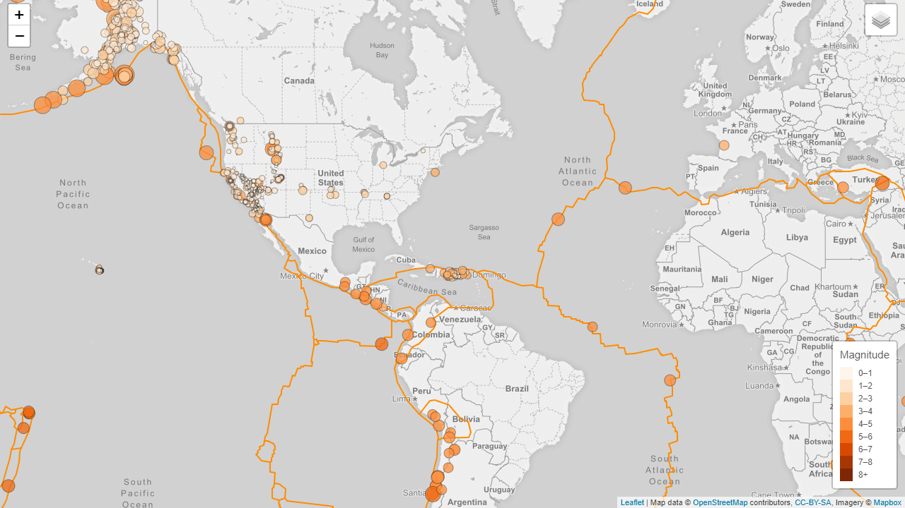
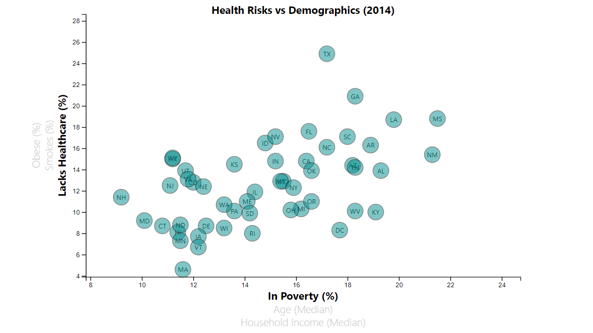
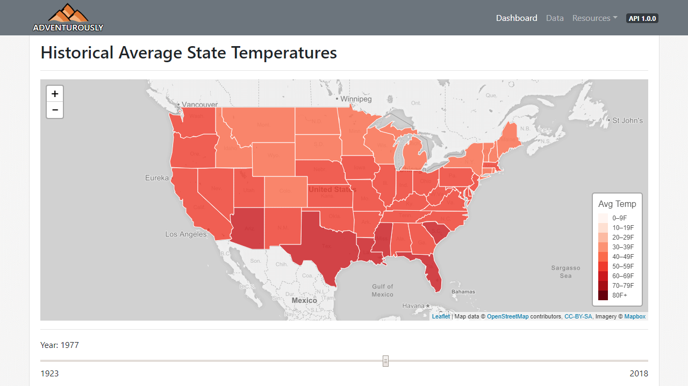
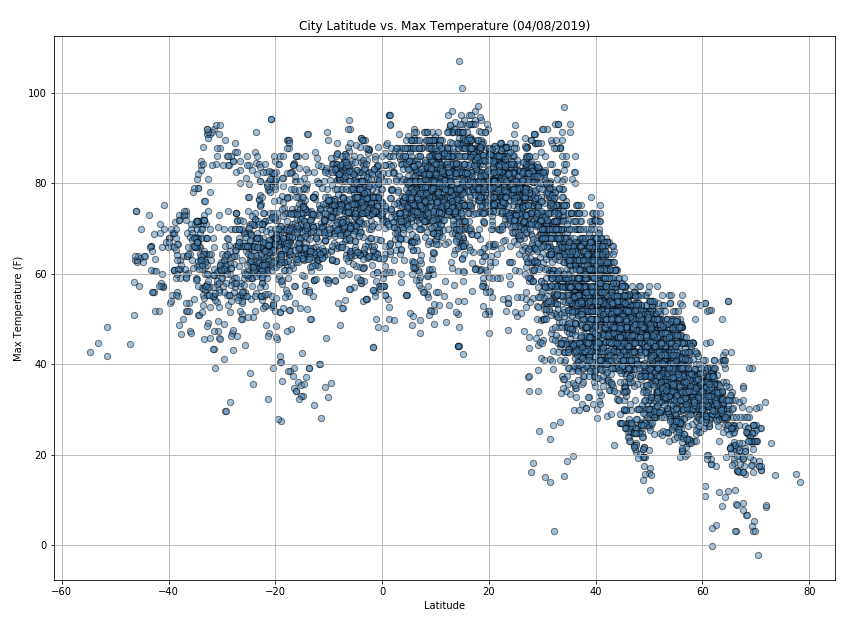

Projects
Earthquake GeoMapping
Recent earthquakes plotted on a global map. Size and color indicate magnitude. Each earthquake marker can be clicked to bring up additional information.
Languages & Libraries Used:
- JavaScript
- D3.js
- Leaflet.js
- Mapbox
- OpenStreetMap
- HTML
- CSS
Health Risks vs Demographics
Interactive scatter plot where axis labels can be clicked to change the plot to show different health risks and demographics of US states.
Languages & Libraries Used:
- JavaScript
- D3.js
- d3-tip.js
- HTML
- CSS
Adventurously
Web-based portal of climate data. Features an interactive dashboard that contains a choropleth of average temperatures for the last century, and allows users to compare data from two states. Utilizes a RESTful API, and has all data available for viewing and searching.
I was primarily responsible for the interactive chorpleth and overall web design.
We had an unfortunately late realization that since the data that we used was categorized as yearly, all data was averaged—including maximum and minimum temperatures. Thus the visualizations only display average maximum, average minimum, and average average temperatures for each year. If we had more time, it would have been nice to get the monthly datasets to more accurately display the high and low temperatures.
Languages & Libraries Used:
- JavaScript
- D3.js
- Leaflet.js
- Mapbox
- OpenStreetMap
- MetricsGraphics.js
- HTML
- CSS
- Bootstrap
- Python
- Pandas
- Flask
- SQLite
- SQLAlchemy
- splinter
- DataTables
- flasgger
Contributors:
- Akash Brown
- Kishore Dubagunta
- Mohammed Musa
- Joleen Sterner
Latitude vs X
A Jupyter Notebook that utilizes the openweathermap.org API to get weather data from over 8,000 random cities across the globe. The data is then plotted with MatPlotLib to find any correlations between latitude and weather characteristics.
Languages & Libraries Used:
- Python
- Pandas
- citypy
- OpenWeatherMap
- MatPlotLib